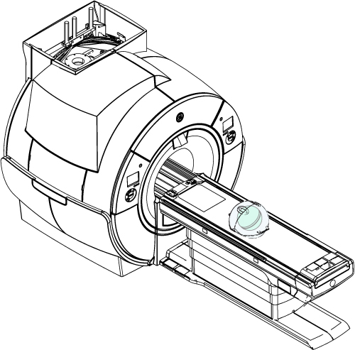
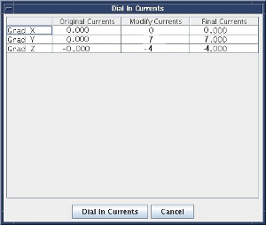

- 00000018WIA30940F20GYZ
- id_131063582.17
- Oct 7, 2021 3:41:53 PM
LVShim Procedures
Prerequisites
| Required persons | Preliminary requirements | Procedure | Finalization |
|---|---|---|---|
| 1 | None minutes | 30 minutes | 10 minutes |
| ||||
| Condition | Reference | Effectivity |
|---|---|---|
|
Confirm that passive shimming is complete and is within specification. Perform Grafidy Eddy Current Calibration. | - | - |
|
Remove all coils from the cradle and phantoms from the bore. | - | - |
About this task
LVShim - Gradshim
The objective is to perform fine-tuning of the homogeneity of the magnet by using gradients only. The Gradshim is performed on 22 cm DSV. Test mode is performed in 5 volumes for peak to peak and rms values. The UI accordingly shows these values and their specs. Once the scan passes and all harmonics are within specification, the magnetic field is reanalyzed in Test mode.
The Gradshim process includes LVShim - Test. The objective of this test is to analyze completed scans at 45 cm DSV without calculating currents.
Preparing for LVShim Procedure
Procedure
Set up LVShim procedure .Notice 
- Set up and align the LVShim phantomNote: No phantom positioner is needed. Place LV Shim phantom directory on the cradle.
Figure 1. Placing LVShim Phantom on Patient Table 
- Landmark on the LVShim phantom crosshairs.
- Set up and align the LVShim phantom
Gradshim LVShim Procedure
About this task
By default, Gradshim is performed in Auto mode, though Manual mode is also available. Both modes are described below.
Auto Mode
About this task

Procedure
Manual Mode
Procedure
- Select Gradient Shim and Manual Mode, then click Scan (see Figure 3).After the scan is complete, the tool calculates harmonics and compares X, Y and Z to specifications.
- Green cell = Passed specification
- Red cell = Failed specification
Figure 4. Gradient harmonics and gradient bits 
The tool calculates the X, Y and Z gradient delta currents (for gradient bits only) and the new currents based on the harmonics in another window.
Figure 5. Original Delta and New Currents (Examples) 
Finalization
Procedure
- For Gradshim, continue with the following steps.
- Remove any phantoms and/or tools used.
- Perform a Check Scan before turning the unit over to the customer.